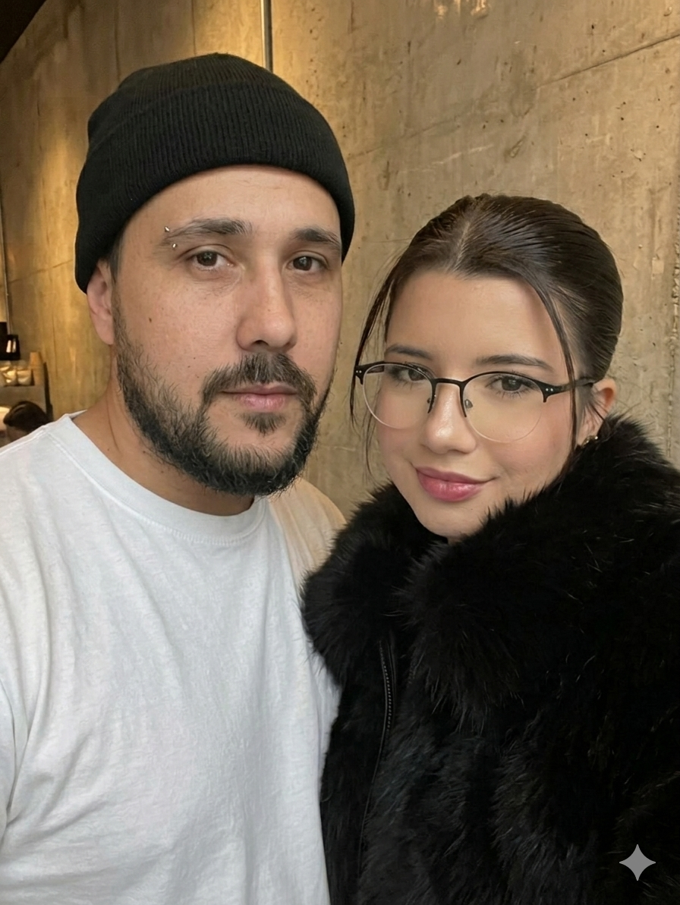

Büşra ❤️ Muhammet
Canım sevgilim, sana küçük bir süpriz yapmak istedim umarım mutlu olursun

Aşkımızın Kronometresi
📍 Özlem Mesafe Sayacı 📍
*Otobüsle 5 saat, seni চিন্তা করতে গিয়ে পলক ফেলার আগেই সবচেয়ে কাছে চলে আসি sevgilim.*
Ben Seni Çok Sevdim
Cem Adrian • Muhammet'in Hediyesi
İTİRAFLARIM
Yan yana geldiğimizde ilk yapmak istediğim, sabırsızlıkla beklediğim şey ne?
Sana sımsıkı sarılmak .
Hayatımda olduğun için en çok hangi anlarda "İyi ki varsın" diyorum?
Beni koruyup kollandığın, merak ettiğin anlarda diyorum.
Beni en çok mutlu eden, yüzümü en çok güldüren özelliğin veya cümlen hangisi?
Güzelim diyorsun ya bazen ona çok mutlu oluyorum.
Bu siteyi senin için hazırlarken içimden tam olarak ne geçiyordu?
mutlu olursun belki yüzünde hafif bir gülümseme olur diye bu siteyi hazırladım. Hem de bize küçük bir anı kalır.
🚀 348 KM'yi Yok Etme Simülatörü
Aradaki mesafeyi sıfırlamak için bir buton seç yakışıklım:
Sinir Yatıştırıcı Çalma Listesi 🎧
Tripleri bırakıp kulaklığı takman için Büşra tarafından onaylandı. Kavga ederken dinleyip sinirini yatıştır diye içine dünyanın en tatlı şarkılarını yükledim sevgilim.
Dinle 🎧Beraber İzleyeceğimiz Filmler
Hırsızlar Ordusu (Army of Thieves)
Çok havalı bir kasa hırsızının imkansız bir soygun için Interpol'ün en çok aranan suçlularını bir araya getirme hikayesi. Bizim Konya-Mersin arası kavgaları çözme çabamız da tam bir imkansız soygun operasyonu sevgilim. İzlerken kilitleri açtığımız gibi kalbini de bana tamamen açacaksın.
Red Notice
Dünyanın en çok aranan sanat eseri hırsızı, bir FBI ajanı ve azılı bir rakip karşı karşıya! Eğlencesi ve temposu o kadar yüksek ki, izlerken bana olan inatçılığını unutup o muhteşem kahkahalarından atacaksın yakışıklım.
Xtremo
Kanlı bir intikam almak için kılıç kuşanıp kurşun yağdıran eski bir tetikçinin hikayesi. Aksiyonu izlerken aramızdaki tüm mesafelerin getirdiği stresi ve tüm tripleri tek bir sahnede patlatıp yok edeceğiz.
Ölümcül Labirent (Escape Room)
Esrarengiz bir kaçış odası oyununa katılan altı yabancının zekalarını kullanarak odalardan çıkma mücadelesi. Biz de bu uzak mesafe labirentinden birbirimize olan sevgimiz ve sabrımız sayesinde tıkır tıkır çıkacağız sevgilim, kurtuluşumuz bu labirentte saklı!
Görünmez Adam (The Invisible Man)
Baskıcı bir ilişkiden kaçan ve görünmez bir varlık tarafından rahatsız edilmeye başlanan bir kadının gerilim dolu mücadelesi. Merak etme sevgilim, ben görünmez bir varlık gibi değil, her an yanındaymışım gibi sevgimle seni koruyup kollamaya devam edeceğim.
Rehine (iRehine)
Amsterdam'ın merkezindeki Apple Store'da yaşanan silahlı bir rehine krizi ve polisin bu açmazı çözmek için harcadığı nefes kesen çaba. Gerçek olaylardan esinlenmiş! Bizim aramızdaki kilitlenen durumları çözmek de tam bir kriz yönetimi ama bizim sonumuz mutlu bitecek.
Çılgın Aptal Aşk (Crazy, Stupid, Love)
Boşandıktan sonra perişan olan Cal'in, kadınları etkilemeyi çok iyi bilen çapkın bir adamdan yardım alma hikayesi. Tabii bu çapkın adam hayatının aşkıyla karşılaşmak üzeredir. Ben de hayatımın aşkıyla, yani seninle çoktan karşılaştım yakışıklım, bu çılgın aşkı beraber izleyelim.
Felekten Bir Gece (The Hangover)
Vegas'taki o meşhur bekarlığa veda partisi ve ertesi gün damadın kaybolmasıyla hiçbir şey hatırlamayan arkadaşların efsane komedisi. İzlerken gözümüzden yaş gelene kadar güleceğiz ve kavga ettiğimiz o anları biz de tamamen unutacağız sevgilim.
Sürprizli Gece (The Sleepover)
Anne babaları hırsızlar tarafından kaçırılan çocukların ajan aletleriyle bir gecelik çılgın macerası. Bizim ilişkimiz de tam bir macera; mesafeler bizi kaçırmaya çalışsa da biz sevgimizle her engeli aşarız.
I Care a Lot
Yaşlı insanları dolandıran profesyonel bir kadının, sert kayaya çarpıp sürpriz bağlantıları olan bir hedef seçmesiyle başlayan kara komedi. Sen de benim kalbimi çalarak çok sürprizli ve inatçı bir kayaya çarptın sevgilim, gel birlikte gülelim.
Büşra & Muhammet | Mesafe Tanımayan Aşk © 2026